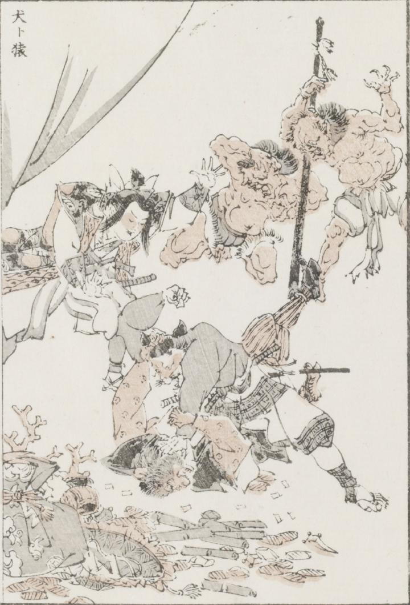

犬；イヌ，猿；サル，鬼；オニ，桃太郎；モモタロウ

着物に袴、脚絆、草履を付けた犬と猿がけんかをし、犬が猿を地面におさえつけている。周りを桃太郎と2匹の鬼が取り囲み、桃太郎は両手を上げて犬と猿のけんかをとめようとしている。小槌、小判や珊瑚などの財宝が画面手前に散らばっている。
著作者：牧墨僊／出典：親書誌：U426_nichibunken_0097：滑稽洒落狂画苑；コッケイシャレキョウガエン／日付：2007／資源識別子：U426_nichibunken_0097_0002_0000
Copyright (c)2010- International Research Center for Japanese Studies, Kyoto, Japan. All rights reserved.